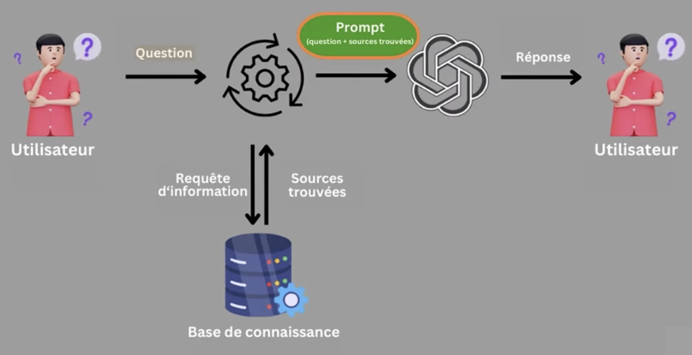
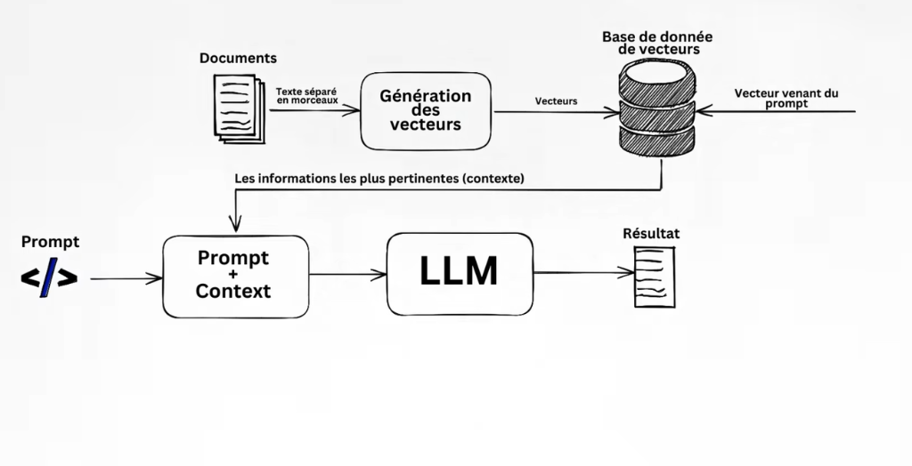
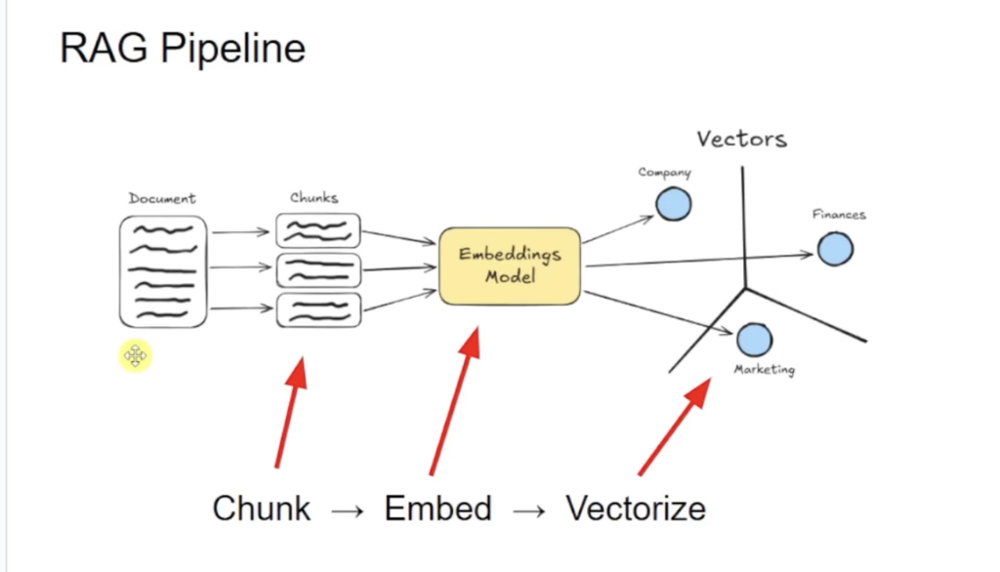
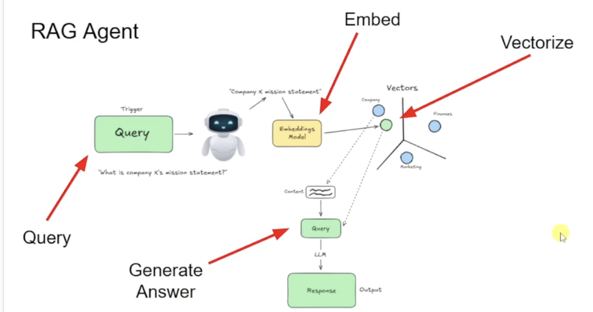
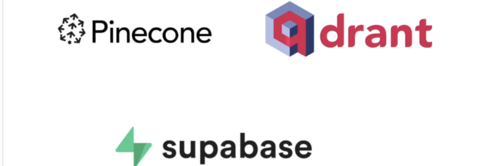
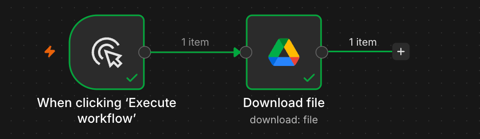
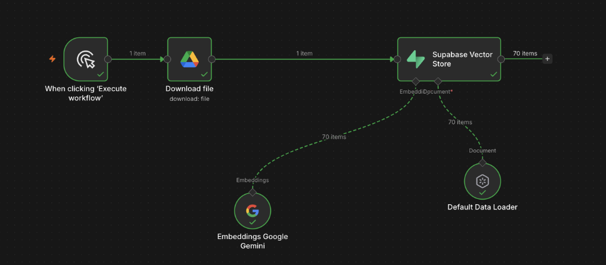
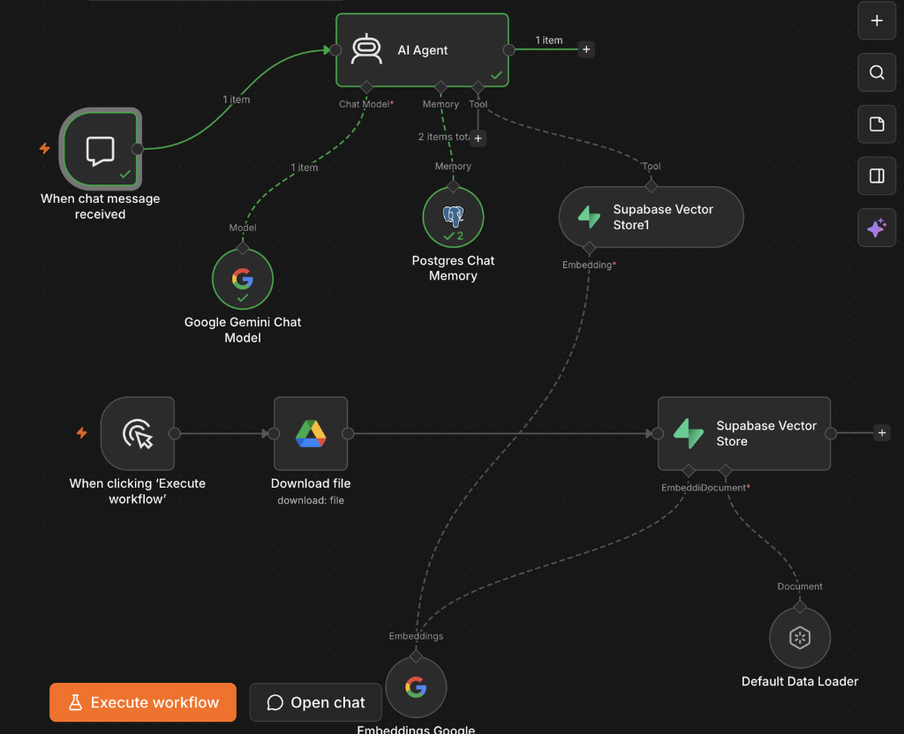
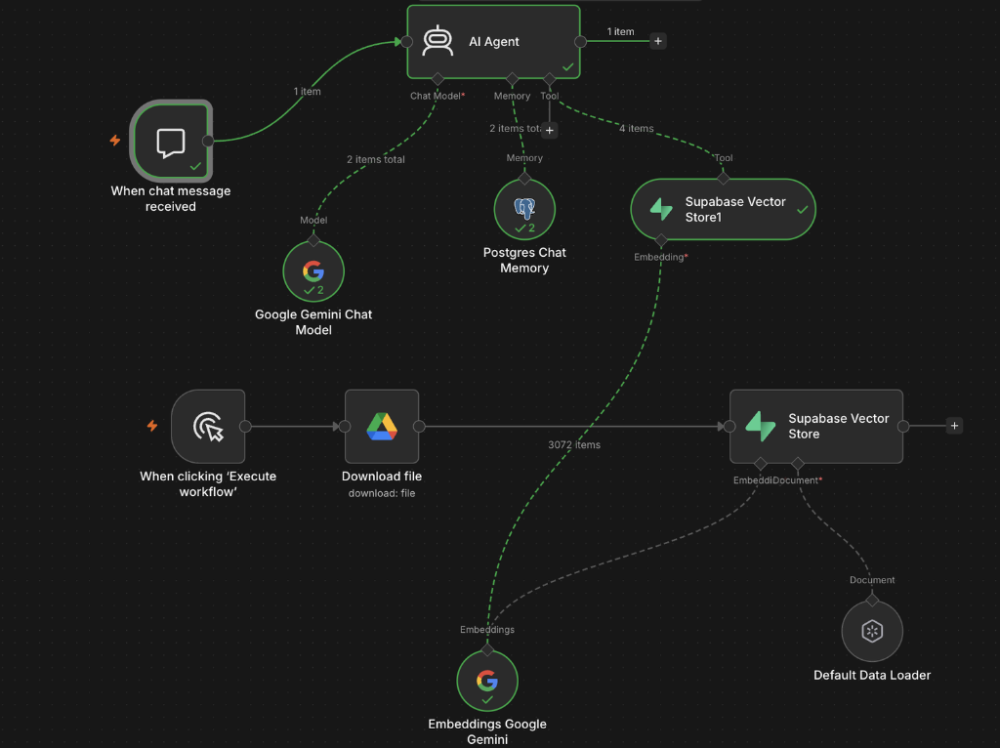
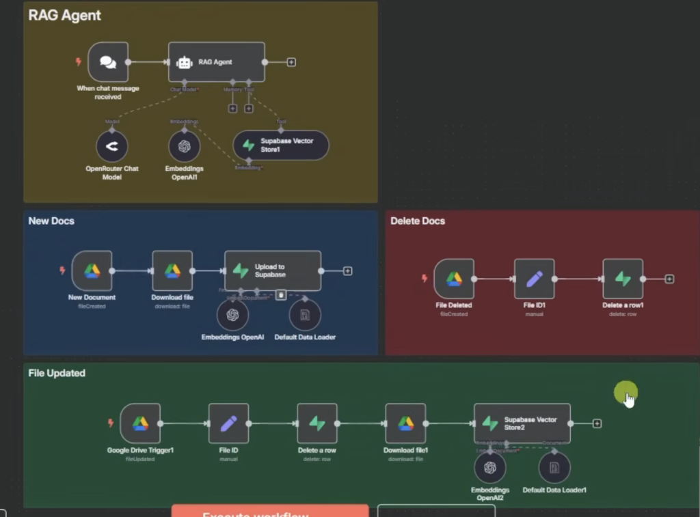

Pipeline RAG avec n8n : Du Concept à la Production
Guide complet d'architecture et de mise en œuvre d'un système de Retrieval-Augmented Generation (RAG). Comprendre les représentations vectorielles, construire le workflow n8n et synchroniser automatiquement les documents en temps réel sans doublon ni hallucination.
Fondamentaux RAG & Architecture Sémantique
Le Problème : Pourquoi un LLM seul ne suffit pas ?
Un modèle de langage (LLM comme Google Gemini ou OpenAI) est entraîné une fois pour toutes sur des téraoctets de données publiques du web. Cependant, dès qu'on souhaite l'exploiter sur des cas concrets d'entreprise ou personnels, trois limites apparaissent immédiatement :
Le modèle ne connaît aucun de nos documents internes (nos fichiers Google Drive, nos procédures, nos notes de synthèse, nos PDF).
Plutôt que d'avouer son ignorance sur une clause spécifique, le LLM génère une réponse vraisemblable mais complètement inventée.
La Solution RAG : Récupération Augmentée par la Recherche
Le principe fondamental du RAG consiste à intercaler une étape de recherche documentaire automatique entre la question posée par l'utilisateur et l'inférence du modèle :

Le flux de données se résume en une chaîne déterministe très élégante :

Les Deux Pipelines : Chunk ➔ Embed ➔ Vectorize
Tout système RAG opérationnel repose sur la stricte séparation de deux flux : l'indexation (hors ligne, une fois par document) et l'interrogation (en direct, à chaque message utilisateur).
1. Le Pipeline d'Indexation (Ingestion Documentaire)
On ne peut pas transformer un livre de 300 pages en un seul vecteur sans diluer son sens. Le document source suit donc 3 étapes indispensables :

- Chunking (Découpage en morceaux) : Le document est fractionné en petits blocs (ex: 500 caractères) avec un léger chevauchement (50 caractères d'overlap) pour ne pas casser de phrases.
-
Embedding Model (Modèle sémantique) : Chaque chunk est converti par Google Gemini (
text-embedding-004) en un vecteur mathématique de 768 dimensions. - Vectorize & Store (Espace vectoriel) : Les chunks qui partagent le même sujet (ex: Company, Finances, Marketing sur le schéma ci-dessus) se retrouvent regroupés géométriquement dans l'espace.
2. Le Pipeline d'Interrogation (L'Agent RAG)
Quand l'utilisateur pose sa question, l'Agent autonome applique exactement la symétrie de ce processus :

La question est projetée dans le même espace 3D/768-D. La base calcule la proximité géométrique pour extraire le texte exact qui s'en rapproche le plus.
Le LLM reçoit l'extrait de contenu retrouvé + la question initiale et rédige une réponse factuelle, sans risque d'erreur.
3. Le Choix de la Base de Données Vectorielle
Plusieurs technologies permettent de stocker et d'indexer des millions de vecteurs pour effectuer des recherches de similarité ultra-rapides :

Solution SaaS 100% cloud dédiée aux vecteurs. Très rapide et managée, mais payante et fermée.
Moteur vectoriel open-source écrit en Rust. Idéal pour le filtrage complexe de métadonnées et l'on-premise.
Le choix recommandé : PostgreSQL natif avec l'extension vector. Permet de joindre nos tables SQL et nos vecteurs au même endroit.
Câblage Visuel du Workflow n8n Pas à Pas
Voyons maintenant comment ce pipeline s'implémente concrètement dans l'interface visuelle de n8n.
Étape 1 : Le Déclencheur et le Téléchargement Google Drive
Le workflow commence par la récupération du fichier source stocké sur Google Drive :

Étape 2 : L'Usine d'Indexation Supabase
Le fichier téléchargé est envoyé au nœud Supabase Vector Store, qui s'appuie sur deux sous-nœuds spécialisés :

models/text-embedding-004, la dimension est de 768.Notre colonne SQL Supabase doit être déclarée :
embedding vector(768).Si on utilise
gemini-embedding-001 (3072 dimensions), Supabase lèvera une erreur expected 1536/768, not 3072 si la colonne n'a pas la même taille !
Étape 3 : Le Canvas n8n Complet (Ingestion + Agent)
Voici la vue globale du workflow sur le canvas n8n, montrant les deux moitiés qui travaillent de concert :

Étape 4 : Exécution Réussie en Conditions Réelles
Lors du test en direct, n8n affiche les coches vertes de validation et le nombre d'éléments transférés entre chaque nœud :

Le RAG en Production : Synchronisation Temps Réel (CRUD)
Dans un vrai environnement professionnel, les documents ne sont pas figés : on ajoute un fichier, on en modifie un autre, ou on en supprime un troisième sur Google Drive. Si notre RAG ne synchronise pas ces changements, on aura des doublons, des réponses périmées et des hallucinations.
Voici l'architecture industrielle complète à 4 panneaux qui résout définitivement ce défi :

Analyse Détaillée des 4 Panneaux :
Déclencheur : Google Drive Trigger (fileCreated).
Dès qu'un nouveau document est déposé dans le dossier partagé, n8n le télécharge, le découpe en chunks et l'insère dans Supabase avec son fileId dans les métadonnées.
Déclencheur : Google Drive Trigger (fileUpdated).
L'astuce essentielle : n8n commence par exécuter Delete a row dans Supabase pour purger tous les anciens chunks du fichier, puis télécharge et ré-indexe la nouvelle version. Zéro doublon !
Déclencheur : Google Drive Trigger (fileDeleted).
Quand un fichier est mis à la corbeille, n8n récupère son File ID et supprime instantanément toutes ses lignes dans Supabase. Le modèle ne citera plus jamais une information supprimée.
L'Agent conversationnel écoute les messages utilisateurs et interroge la table Supabase toujours parfaitement à jour, garantissant une précision à 100%.
Guide Pas à Pas pour mettre en place ce Workflow dans n8n :
-
Configurer le nœud Google Drive Trigger : On crée 3 triggers distincts pointant sur notre dossier Google Drive avec les événements respectifs :
fileCreated,fileUpdated, etfileDeleted. -
Enregistrer le
fileIddans Supabase : Dans le nœud Supabase (Upload), on va dans les métadonnées et on ajoute le champ :{"fileId": "={{ $json.id }}", "fileName": "={{ $json.name }}"}. -
Configurer le nœud Supabase 'Delete a row' : Dans le mode Suppression, on cible la table
documentsavec le filtre :metadata->>fileId = {{ $json.id }}.
Checklist Anti-Pièges & Bonnes Pratiques
Ni trop grand (perte de pertinence), ni trop court (perte de contexte). Entre 400 et 800 caractères avec 10% d'overlap est la zone optimale.
Utilisez impérativement le même modèle pour l'indexation des documents et pour la question utilisateur (text-embedding-004 dans les deux cas).
Exigez dans les instructions de l'Agent : « Si l'information ne figure pas textuellement dans les documents récupérés, réponds simplement : 'Je n'ai pas cette information'. N'invente rien. »
Ajoutez systématiquement le nom du fichier, le numéro de page ou le paragraphe dans les métadonnées. L'agent pourra ainsi citer précisément ses sources.